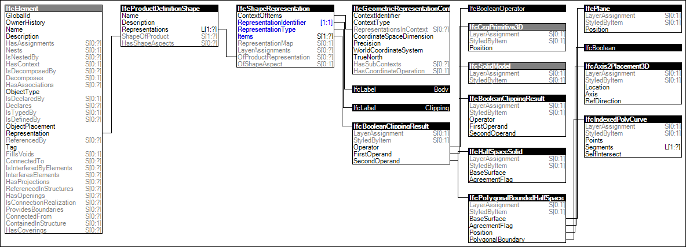

Link to this page
Link to this pageThe Body Clipping Geometry is the representation of the 3D shape of a product by using Constructive Solid Geometry models with difference operations involving half space solids only.
The following attribute values for the IfcShapeRepresentation holding this geometric representation shall be used:
NOTE This representation type is predominately used for compatibility with previous releases of the standard.
Figure 82 illustrates an instance diagram.
 |
Figure 82 — Body Clipping Geometry |